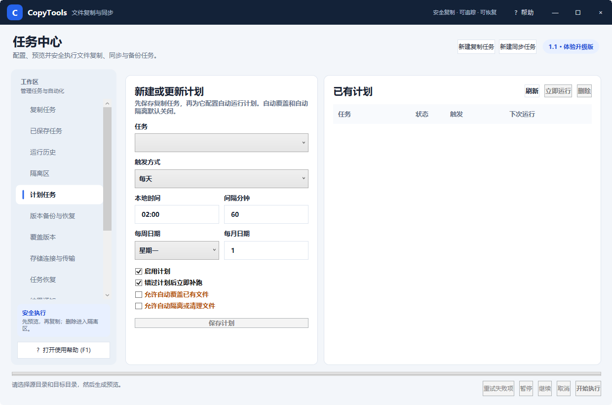

CopyTools 使用帮助计划任务与实时触发
计划任务与实时触发
自动化只能引用已经保存的任务。先在“复制任务”中配置、预览、手工成功运行并保存，再创建计划。

图 4：创建每天、每周、每月、间隔或启动后执行的计划
创建计划
- 在任务下拉框中选择一个已保存任务。
- 选择触发方式：每天、每周、每月、固定间隔或应用启动后。
- 填写本地时间、间隔分钟、每周日期或每月日期。无关字段会被忽略。
- 保持“启用计划”勾选；“错过计划后立即补跑”适合电脑经常休眠或关机的场景。
- 单击“保存计划”，右侧会显示启用状态、触发规则和下次运行时间。
自动安全授权
计划任务默认不自动批准覆盖和删除。若任务确实需要无人值守镜像，可分别勾选“允许自动覆盖已有文件”和“允许自动隔离或清理文件”。
自动安全授权只应在源、目标和过滤规则长期稳定，且至少完成过一次人工审查的情况下开启。删除阈值仍然生效。
实时与设备触发
- 目录变化：监视指定目录，变化稳定超过去抖时间后运行任务，避免文件仍在写入时过早复制。
- 设备接入：检测指定卷或移动设备出现后执行，适合相机卡、U 盘和移动硬盘。
- 网络恢复：目标重新可用后运行。任务自身的可用性等待时间仍会约束本次执行。
后台运行与通知
在“应用设置”启用最小化到托盘后，关闭或最小化窗口不会中断计划。托盘菜单可显示主窗口、打开帮助和运行已保存任务。“结果通知”可配置桌面提示、Webhook 或 SMTP 邮件。